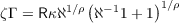
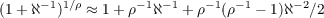

33Other approximations are better for consumers who are highly impatient, relative to their unemployment risk; in this case a better approximation to (123) is obtained by rewriting it as  and approximating using .